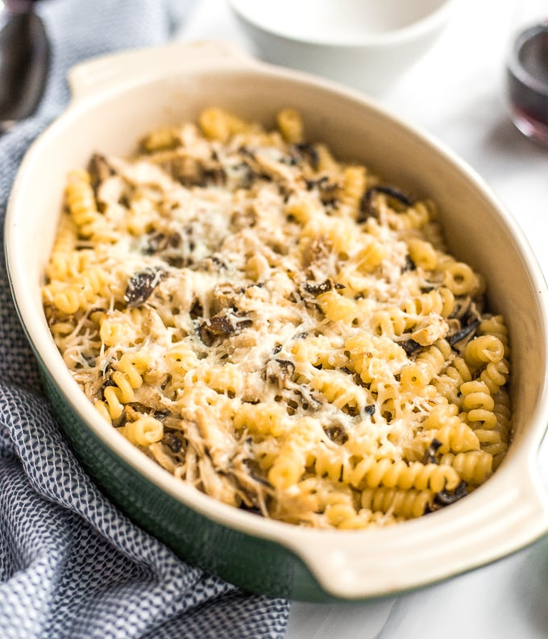
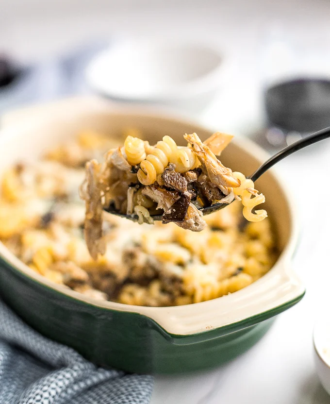

BAKED PASTA WITH CHICKEN
Baked pasta with rotisserie chicken and shiitake mushrooms is my personal hero. It’s quick prep and cook time (under 30 minutes!) makes it easy enough for a weeknight meal, but has enough pizazz to be the star of your next dinner party. And the flavour — oh my gosh! Don't get me started on that!
This is definitely a lighter pasta dish, as it has no heavy sauce dragging it down. But what sets it over the edge is the sprinkle of fresh basil right at the end. So so perfect for spring!
Ingredients
To make this delicious creamy mushroom pasta, you will need the following ingredients:
-
½ lb. dry pasta (I used fusilli pasta)
-
2 tablespoons unsalted butter
-
1 tablespoon olive oil
-
½ lb. shiitake mushrooms, stems removed, thinly sliced
- 2 medium shallots, thinly sliced
-
1 tablespoon salt
- ¼ tablespoon ground black pepper
- 1 chicken breast, roasted (rotisserie chicken)
- ¼ cup heavy cream
- 2 tablespoons sherry vinegar
-
¼ cup + 2 tablespoons grated asiago cheese, divided
- 2 tablespoons grated Parmesan cheese
- Fresh basil, for garnish
HOW TO MAKE THE BEST CREAMY MUSHROOM PASTA
Making this pasta is welly easy. Just follow the steps below.
-
Preheat oven to 375 F. Bring a large pot of salted water to a boil. Cook pasta until just al dente, about 9 minutes. It will finish cooking in the oven. Drain and set aside.
-
In a large skillet, heat butter and olive oil. Add shiitakes and cook, untouched, for 3 minutes. Add shallots (and another 1-2 tablespoons of olive oil if your pan is dry), then stir, season with salt and pepper, and cook until shallots are soft and translucent, about 4 minutes.
-
Meanwhile, shred roasted chicken breast with your hands or by using two forks and pulling the meat in opposite directions. Add chicken to mushrooms and shallots. Pour in heavy cream and sherry vinegar, then stir to combine.
-
In a large bowl, combine cooked pasta, chicken and mushrooms, and ¼ cup of asiago cheese. Mix thoroughly, then pour into a greased 2 quart (or other small) baking dish. Top pasta with remaining 2 tablespoons asiago and the grated Parmesan cheese. Bake for 20 minutes, then top with fresh basil leaves and serve immediately.


Tips
-
I use white meat in this pasta, but feel free to substitute it with dark meat if that’s what you prefer.
Home Page